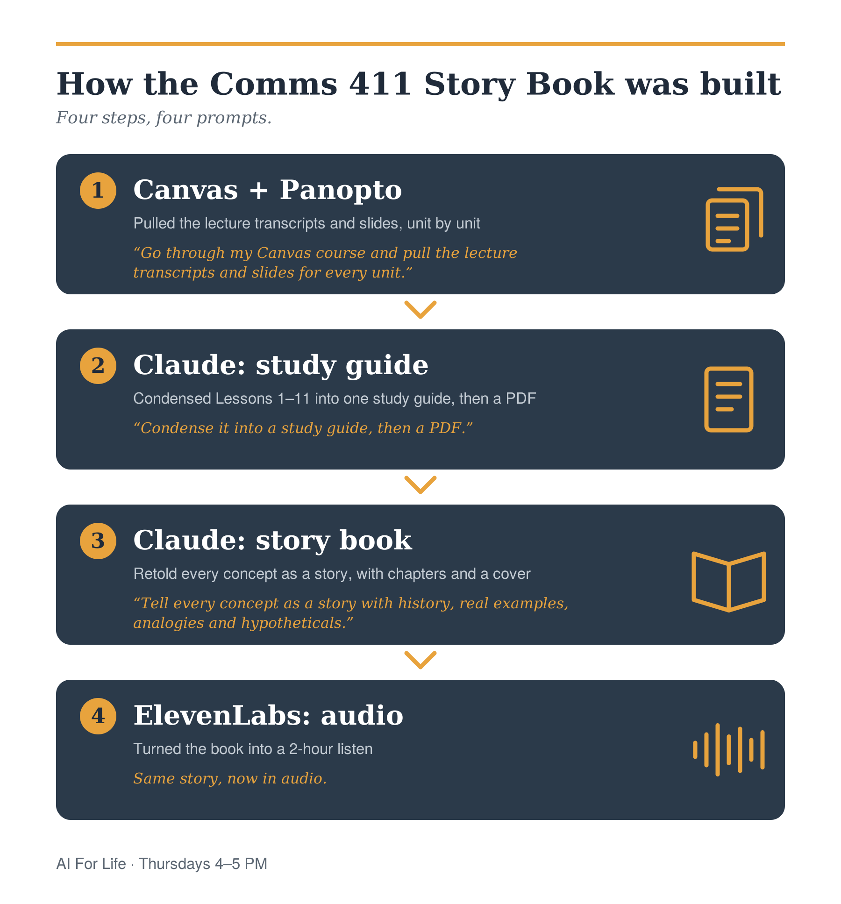

This site
By the AI For Life club
Tool guides, a glossary, prompts and meeting notes in one place, built from a plain GitHub repo and published for free. Anyone can add to it.
What we have built with these tools. Add yours, even if it is small.
By the AI For Life club
Tool guides, a glossary, prompts and meeting notes in one place, built from a plain GitHub repo and published for free. Anyone can add to it.
By Brunson Smith
The video at the top of the home page was made with FLUX 3 and shared in the club chat.
By Brunson Smith
A BYU media effects class turned into a story book and a two-hour audio version, so the lessons can be heard on the go. It took four steps and a handful of prompts, and the prompts are in the prompt library if you want to repeat this on your own class.

Listen (about 43 minutes per part)
Part 1
Part 2
Part 3
The audio is a retelling of one class's lessons for studying. It is not an official course resource, so check anything important against your own class materials.
A project you can point to beats a line on a resume. Employers and investors look for evidence you can build, and a public page with your name on it is evidence. It also shows the rest of the club what is possible with free tools.
Add new projects ABOVE this line and paste the template below just above it.<article class="project"> <span class="tag">Tools used</span><h3>Project name</h3> <p class="note">By Your Name</p> <p>One or two sentences on what you made and why.</p> <p><a href="https://example.com" target="_blank" rel="noopener">See it ↗</a></p> </article>
Only share work you are comfortable making public, and never include private client information.